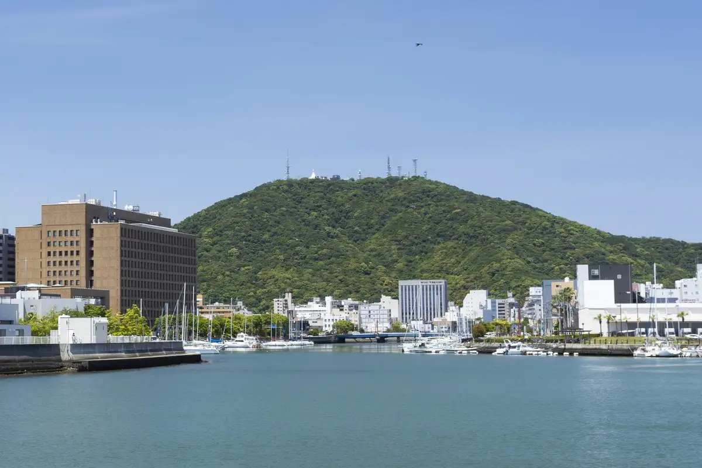
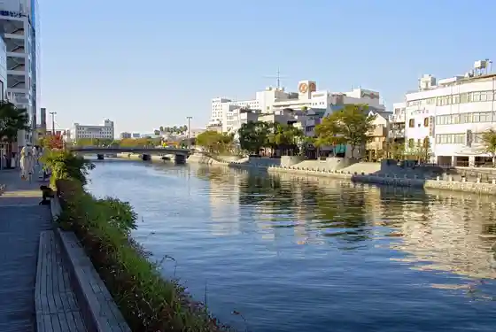
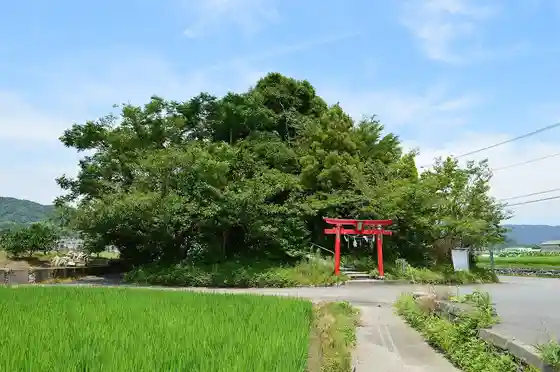
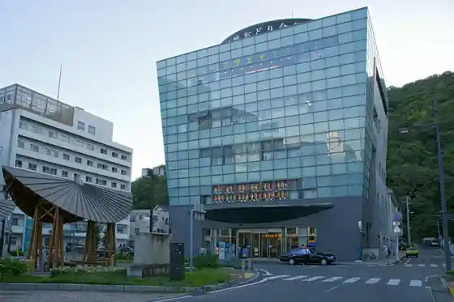
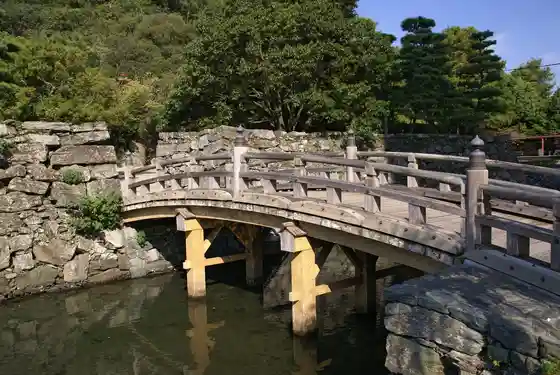

Tokushima
Tokushima · Tokushima
Tokushima
Highlighted on the Tokushima map.

Experience
Awagin Bizan Ropuei
Awagin Bizan Ropeway, Shinmachibashi, Tokushima
Tokushima Shiro Museum
Tokushima Castle Museum, Tokushima-cho, Tokushima
Tokushima Garasusutajio
Tokushima Glass Studio, Katsura-cho, Tokushima
Tokushima Zoo
Tokushima Zoo main gate, Tokushima
Hyotan Shima Kuruzu
Hyotan-jima cruise boat, Tokushima
Sights
Bizan
Mount Bizan from the Shinmachi River, Tokushima
Shin Town Kawamizu Kiwa Park Shinmachi Bodooku
Shinmachi Boardwalk, Minamiuchi-cho, Tokushima

Benten Yama
Mount Benten panorama, Hachiman-cho, Tokushima

Awa Odori Hall
Awa Odori Hall and Bizan Ropeway, Shinmachibashi, Tokushima

Tokushima Castle Ruins
Tokushima Castle ruins, Tokushima-cho, Tokushima

Bunka no Mori General Park
Tokushima Bunka-no-mori Park, Hachiman-cho, Tokushima
Bizan Park
Bizan Park, Tokushima